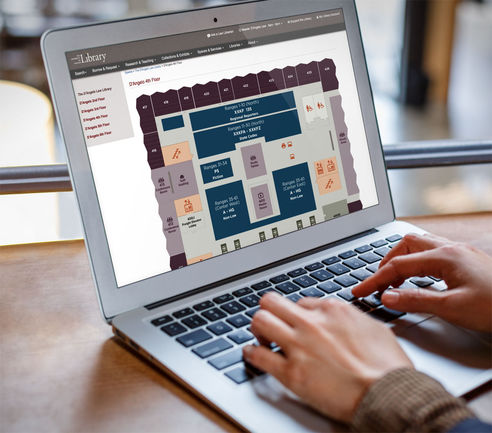

User testing and complete redesign the Library's floor maps.
Consistent design through all Library branches

Before / After
Problem
The floor maps the University of Chicago was using had several usability issues for the staff and patrons. The Reading Room areas were separated from the Bookstacks, with the original intent to aid patrons in finding stacks materials. User testing proved that the separation of a floor into two parts confused our patrons and hindered their understanding of the distinctions between these areas.
The orientation of the two maps for one floor were both different, further disoriented users and added to wayfinding frustrations for both our online and on-site maps. No key or visual cues were included to assign meaning to color assignments or distinct areas.
Solution
The two maps per floor were merged, creating one plan for each floor and utilized consistent placement for the compass and legend.
A style guide was utilized for uniform icons and color use throughout all floor maps for all library branches.
User testing showed issues with reading call numbers, so we included a call number guide for the maps located in the bookstacks.
Previous maps were evaluated for accessibility on points such as color contrast, spatial accuracy, and cognitive reasoning, with the new maps meeting AA WCAG 2.1 standards
Documentation was written to aid future map updates, including how we defined a wall and what items we chose to show versus what we didn’t include in maps.
A slow roll out was coordinated, with the updated maps first being uploaded online so we could gauge user feedback. Changes or issues found during the first academic quarter were rolled into the online maps and then used for the printed maps, which were produced and installed the following quarter.
Press
Case study included in: Signage and Wayfinding for Libraries, Mark Aaron Polger (forthcoming)